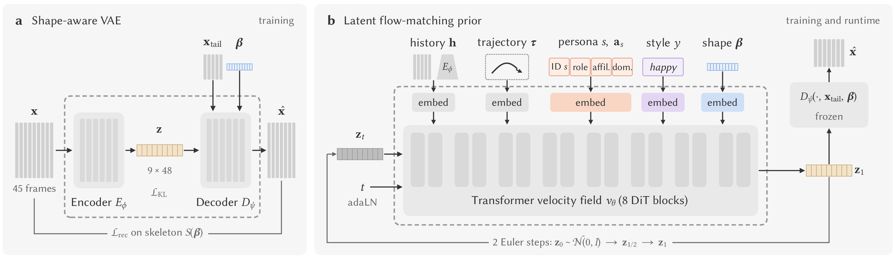

Overview video
01 · Controls
Change one dial, the other two stay put
Same command every time. Persona is a real performer's movement signature, body is the SMPL-X shape that carries it, style is how they move (happy, drunk, swimming…).
02 · Demo
Run it yourself
Steer with the keyboard or a gamepad, switch persona and style, and drag ten body-shape sliders mid-walk. Raw model output, no foot IK. It runs locally: a Python install plus a free-for-research SMPL-X licence.
WASD move · Shift run · F lock facing · [ ] style · , . persona · B persona's own body. Run it with python realtime_demo.py (instructions). Rendering uses ai4animationpy; the SMPL-X model file is downloaded separately under its own license.
03 · Data
Capture, measure, then retarget
A performer is captured in exactly one body, so the raw data cannot say which traits belong to the person and which to the body. We build the missing cross-body data in three steps.
- 1Capture48 performers repeat the same nine styles and seven commands.
- 2MeasureFind which gait traits actually follow the body. Only trunk lean does.
- 3RetargetPut every take on 128 bodies, changing only what the measurement says.
1Capture
MotionPersona: about 33 hours of motion from 48 performers aged 5 to 68, recorded with optical motion capture. Everyone performs the same grid of nine styles × seven locomotion commands, so the effect of the person, of the style, and their interaction can be told apart. 44 performers also describe themselves with three persona attributes: role, affiliation and dominance.
2Measure
“The same motion on another body” has no unique answer, so we measure instead of guessing. Each of 27 gait descriptors is decomposed into a performer, a style and an interaction effect, and a trait is assigned to the body only if it survives an age control, holds in all nine styles, and is confirmed by twelve matched adult pairs that differ only in body.
Follows the body
Forward and side trunk lean grow with hip width. The retargeter uses 150° and 65° per metre, between the matched-pair and the population slopes.
Stays with the performer
Cadence, normalised step length, knee range, foot clearance, joint speed. A body-shape predictor explains at most 7.5 % of the differences between performers.
3Retarget
MotionPersonaX: every annotated clip optimised onto 128 SMPL-X bodies (the 48 captured ones plus 80 tiling heights of 1.05–1.95 m against eight girths), giving 328,960 clips, about 4,200 h. The optimiser keeps the source timing, makes trunk lean follow the body, and fixes penetration, foot contact and balance on the new body.
Body model, the eleven objective terms and the full measurement are in the MotionPersonaX dataset card.
04 · Explore
Browse the data in 3D
Any captured clip on the participant's SMPL-X body, and each participant's neutral walk retargeted onto any of the 128 bodies, streamed from the dataset and rendered in your browser.
Also available as a full-page Space; the data itself is on Hugging Face.
05 · Method
How it works
Two components, one job each: a decoder that knows the body, and a prior that knows the person.

Motion is generated block by block: every block predicts the next 45 frames (1.5 s at 30 fps) from the last frames already played, and only the first few of them are committed (12 in the offline protocol, 3 to 12 in the realtime demo) before the next block is generated, so the character reacts to new commands within a fraction of a second. Each block passes through two stages, trained one after the other.
Stage 1: shape-aware VAE
In panel (a), the encoder E compresses a 45-frame block x into a few latent tokens z (9 tokens of 48 dimensions). The decoder D turns z back into joint rotations, root motion and foot contacts on a given body: besides z it receives the body's 10 SMPL-X shape coefficients β and the last frames of the motion so far (xtail, the last 5 frames, so consecutive blocks join without a seam). It is trained with reconstruction, forward-kinematics and contact losses evaluated on the skeleton S(β) of that body.
The decoder therefore owns everything that is geometry: where the feet land, how far a step reaches, how the pelvis and trunk sit on this body. The latent z keeps what the motion is, and β decides how it is realised. Decoding one z sequence on different bodies gives the same motion carried by each of them:
Stage 2: latent flow-matching prior
In panel (b), with the codec frozen, a transformer (8 DiT blocks) learns to generate the next block's latent tokens z. It is conditioned on the motion history (one token from the codec encoder), the commanded trajectory (45 future positions and facings), the persona (a learned performer-ID token plus role, affiliation and dominance attribute tokens), the style, and the target body shape β. Sampling takes two Euler steps from Gaussian noise, after which the frozen decoder renders the tokens on the target body.
The prior chooses which motion this persona, in this style, would perform for this command on this body, in a space small enough for a real-time budget; the decoder fits the result to the body.
06 · Results
Experimental Results
The same gait descriptors from capture to generation, each control swept in isolation, compared against CAMDM, a state-of-the-art real-time diffusion controller trained on the same data.
(CAMDM: 49 %)
(CAMDM: 32 %)
(CAMDM: 2.59)
Own-body test set, one-minute rollouts. CAMDM is marginally better on pose FPD (0.30 against our 0.32), and the two are level on foot smoothness and dynamics spread; ours wins on floor contact, persona and style.
07 · Extensions
Beyond locomotion
Both stages take their conditions as tokens, so a new task adds a token and retrains the prior. Two preliminary directions:
08 · Cite
BibTeX
@article{shi2025motionpersona,
title = {MotionPersona: Real-Time Locomotion Control across Personas, Bodies, and Styles},
journal = {arXiv preprint arXiv:2506.00173},
year = {2025}
}